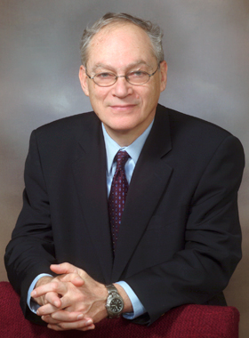

News Archives : 2012 : Richard Losick Receives Prestigious Horwitz Prize
by Cathryn Delude
September 24, 2012

The Department of Molecular abd Cellular Biology's Richard Losick, PhD, is one of three recipients of Columbia University’s 2012 Louisa Gross Horwitz Prize for discoveries related to the intracellular structure of bacterial cells. The Horwitz Prize, established in 1967, is Columbia University’s top honor for achievement in biological and biochemistry research. It is a frequent precursor to a Nobel Prize, as 42 of 87 past participants later received Nobels
Losick, the Maria Moors Cabot Professor of Biology and a Howard Hughes Medical Institute Professor, shares the prize with Joe Lutkenhaus, PhD, of Kansas Medical School, and Lucy Shapiro, PhD, of Stanford University School of Medicine, for their collective work on the intricate, dynamic, three-dimensional organization of bacterial cells and expanding the understanding of the life of a cell. Together, they dispelled the notion that tiny bacterial cells are mere “bags of enzymes” holding a “jumbled mess of proteins and DNA.”
“I am of course thrilled to win the Lousia Gross Horwitz Prize, and all the more so as a microbiologist as the Horwitz Prize has not recognized work in this field for more than 25 years,” said Losick. “It’s exciting times in microbiology (witness the success of Harvard’s Microbial Sciences Initiative and the enormous number of young microbiologists who attend the Boston Bacterial Meeting at Harvard each spring). So I am especially pleased to receive this recognition in the context of the vibrant field in which I work and to share it with two friends and colleagues whose work I have admired for many years.”
As chair of the Horwitz Prize Committee, Gerard Karsenty, MD, PhD, of the Columbia University Medical Center said, “The research of these three superb pioneers has led to major insights into the biochemistry and molecular biology of the living cell. It has helped establish the simple bacterial cell as one of the most powerful models for understanding the cycle of cell life and death.”
The committee wrote that Losick “revealed the nature of three-dimensional regulation in bacterial cells, which provided a basis for understanding the properties of cellular asymmetry. He also dissected the gene regulatory mechanisms that govern systems for cellular differentiation. In addition, he discovered the interplay of spatial dynamics and regulatory mechanisms that yields morphologically differentiated cells with different cell fates.”
Lee Goldman, MD, dean of the faculties of health sciences and medicine at Columbia University Medical Center, said that Losick and his co-recipients “join an elite group of scientists who have contributed greatly to the basic science that is the foundation of efforts to better understand diseases, develop new treatments, and improve the lives of patients.” In addition, Michael Purdy, PhD, executive vice president for research, Columbia University, commended the three recipients for their dedication to students and the training of future generations of researchers and scientists.
The Horwitz Prize consists of an honorarium and a citation. It will be awarded following the 2012 Louisa Gross Horwitz Prize Lectures on Tuesday, Nov. 20. Dr. Lutkenhaus will give his lecture, “Dividing a Bacterial Cell,” from 10–11 am in the Davis Auditorium, 530 W. 120 Street, on Columbia University’s Morningside Campus. Dr. Losick will present his lecture, “Chains, Communities and Going Green,” from 12–1 pm in the Davis Auditorium. Dr. Shapiro will give her lecture, “Cell Cycle Regulation in a 3D Grid,” from 3:30–4:30 pm in the Alumni Auditorium, College of Physicians & Surgeons Building, 650 W. 168 Street, at Columbia University Medical Center.
For more information about the Louisa Gross Horwitz Prize and Nov. 20 lectures click here
More MCB stories on Dr. Losick are available here:
https://www.mcb.harvard.edu/mcb/news/news-by-tag/richard-losick